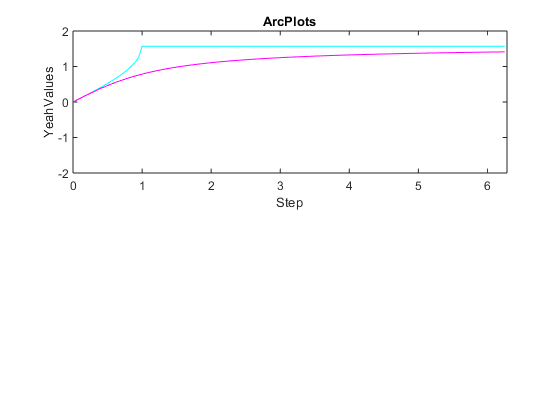
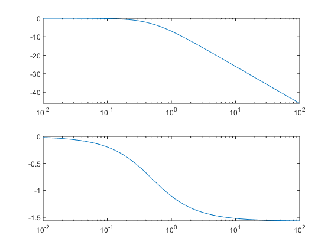

Contents
clc
rest
a = [2; 0; 5];
b = [4; 2; 1];
c = [0; 1; 0];
A = [2 5 2;...
4 34 8;...
4 5 2];
B = [2 4 0;...
3 2 0;...
6 2 0];
fprintf('%s\n', "a)")
disp(a * transpose(b))
disp(a + b)
disp(A * b)
disp(transpose(A) * c)
disp(abs(A))
disp(abs(B))
disp(inv(A))
disp(inv(B))
fprintf('%s\n', "b)")
fprintf('%s\n\n', "Was on a workshop, I dont have any exercises yet")
fprintf('%s\n', "c)")
steps = 0:0.05:2*pi;
sinValues = sin(steps);
cosValues = cos(steps);
tanValues = tan(steps);
arcsinValues = asin(steps);
arctanValues = atan(steps);
plot(steps, sinValues, "r",...
steps, cosValues, "g",...
steps, tanValues, "b")
title("PlotsPlots")
axis([0 2*pi -2 2])
xlabel("Step")
ylabel("MyValues")
subplot(2, 1, 1)
plot(steps, arcsinValues, "c",...
steps, arctanValues, "m")
title("ArcPlots")
axis([0 2*pi -2 2])
xlabel("Step")
ylabel("YeahValues")
a)
8 4 2
0 0 0
20 10 5
6
2
6
20
92
28
4
34
8
2 5 2
4 34 8
4 5 2
2 4 0
3 2 0
6 2 0
-0.5000 0.0000 0.5000
-0.4286 0.0714 0.1429
2.0714 -0.1786 -0.8571
Warning: Matrix is singular to working precision.
Inf Inf Inf
Inf Inf Inf
Inf Inf Inf
b)
Was on a workshop, I dont have any exercises yet
c)
Warning: Imaginary parts of complex X and/or Y arguments ignored

bode plots
fprintf('\n%s\n', "d)")
K = [1, 1.5];
T = [1, 5, 10];
d = [0.5, 0.7, 1, 3];
for i = 1:2
G1 = tf(K(i), [T(1), 1]);
G2 = tf(K(i), [T(1)^2 2*d(1)*T(1) 1]);
figure(1);
bode(G1);grid on; hold on;
title("GPT1 K dynamic");
figure(2);
bode(G2);grid on; hold on;
title("GPT2 K dynamic");
end
for i = 1:3
G1 = tf(K(1), [T(i), 1]);
G2 = tf(K(1), [T(i)^2 2*d(1)*T(i) 1]);
figure(3);
bode(G1);grid on; hold on;
title("GPT1 T dynamic");
figure(4);
bode(G2);grid on; hold on;
title("GPT2 T dynamic");
end
for i = 1:4
G = tf(K(1), [T(1)^2 2*d(i)*T(1) 1]);
figure(5);
bode(G);grid on; hold on;
title("GPT2 d dynamic");
end
d)
my bode
steps = logspace(-2, 2, 1000) * 1i;
[mag, phase] = mybode(1, [2 1], 0, steps);
figure(1);
subplot(2, 1, 1);
semilogx(abs(steps), mag);
subplot(2, 1, 2);
semilogx(abs(steps), phase);
function [mag, phase] = mybode(a, b, Tt, w)
if isempty(Tt)
Tt = 0;
end
if isempty(w)
w = logspace(-2, 2, 1000) * sqrt(-1);
end
g = polyval(a, w) ./ polyval(b, w) .* exp(-Tt * w);
mag = 20 * log10(abs(g));
phase = angle(g);
end
